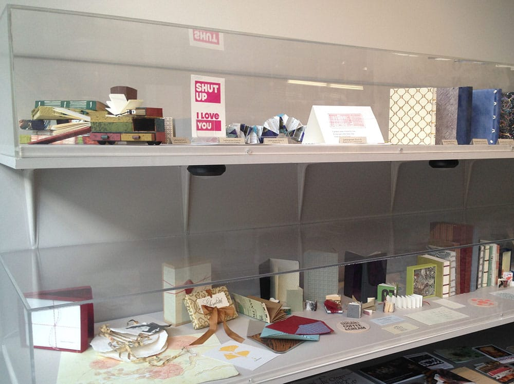

Letterpress Process
There are several different methods for letterpress printing. For my cards I used polymer plates (which I originally designed in Illustrator) on a C&P press. Using polymer plates allows access to modern fonts and flexibility in design. You can transform drawings and sketches into cards, posters, coasters or whatever you desire. I am certified on both Vandercook and C&P presses. In this case I used a C&P because once you get into the zone, you can print a substantial number of pieces relatively quickly.
Cutting Paper
An electric stack paper cutter is used to cut 25 sheets of 40”x 26” paper. Making a cutting schedule is a lot of math but this is a classic example of measure twice and cut once.
Moveable Type
Traditional Letterpress is made with moveable type. Assmebling it is sort of like backwards, upsidedown lego. It's very rewarding when it works but often letters can be missing or worn down in the typecase.
Polymer Plates
I use polymer plates designed in Illustrator - seen in the first image. The finished EPS files are sent to a special facility where the plates are manufactored. Using polymer plates allows for flexible designs and the use of custom fonts. The second image shows the plates being adhered to a lead base to hold them steady during printing.
Ink
This is the inking station at the San Francisco Center for the Book. Pantone books list colors and mixing guides and base colors are moxed to create the desired shade.
A C&P platen press
Here the C&P is inked up and ready to go. The prepared paper is on the shelf on the lower the right.
Over Inking
The right amount of ink needs to be used or you run the risk of either over or under-inking. In this image, the color has also printed darker than intended. The ink needed to be removed from the press in order for the correct color to be applied.
300 Cards
I printed 300 cards. Once dry, I ran them through the C&P again to score them so the Lettra paper would bend in the center without cracking.

On Display
Shut Up I Love You cards with other projects made at The San Francisco Center for the Book.
Clean Press
My clean C&P press after printing the Pegacorn cards.